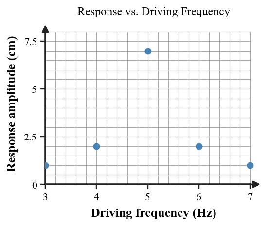

| 1A metronome arm repeatedly swings left and right about a middle position. What makes this motion a vibration? | 2Use the wave profile. Name the feature at A and state what the measurements B and C represent. |
| 3A pulse travels right while one marked point on the rope moves up and down. Classify the wave and justify the classification from the motion directions. | 4A rope wave has frequency 4.0 Hz and wavelength 2.5 m. Calculate its speed and state what that speed describes. |
| 1A pulse crosses a rope while pieces of tape on the rope oscillate near their original locations. What is transferred by the wave, and what is not carried across the room? | 2One complete vibration takes 0.20 s. Determine the frequency and explain how frequency and period are related. |
| 3The particle model shows crowded and spread-out regions while particles move back and forth parallel to wave travel. Classify the wave as transverse or longitudinal. | 4A wave travels at 18 m/s with frequency 6.0 Hz. Find its wavelength. If the speed stays fixed and frequency doubles, what happens to wavelength? |
| 1Which statement best distinguishes a vibration from a traveling wave? A. A vibration is repeated motion; a wave is a disturbance that transfers energy. B. A vibration transfers matter; a wave never transfers energy. C. Only waves repeat. D. They are exactly the same idea. | 2Wave A and Wave B have the same horizontal crest spacing but different vertical size. Compare their wavelengths and amplitudes. |
| 3A pulse train travels 24 m in 3.0 s. Its frequency is 4.0 Hz and measured wavelength is 2.0 m. Do the distance-time and fλ data support the same wave speed? Show the speed. | 4A student says, “If frequency increases, the wave must travel faster.” Critique the claim for one unchanged medium using v = fλ. Explain how wavelength can change while wave speed stays the same. |
| 1Two upward pulse displacements meet and produce a larger upward displacement. What type of interference is occurring? | 2At one point, Wave A produces +3 cm and Wave B produces +2 cm. Use superposition to find the combined displacement and classify the interference. |
| 3The standing-wave pattern has points that remain nearly motionless. What are those points called, and how can incident and reflected waves create the pattern? | 4A siren source moves to the right. Compare the observed frequency for Observer R and Observer L using wavefront spacing; do not change the speed of sound. |
| 1When overlapping waves have opposite-signed displacements that reduce the result, what type of interference occurs? | 2Two pulses overlap with displacements +5 cm and −2 cm. Determine the instantaneous combined displacement and describe the interference. |
| 3In the standing-wave model, identify which marked locations are nodes and describe where the largest oscillations would occur. | 4A train moves away from a stationary listener while its horn emits a steady tone. Does the listener detect a higher or lower frequency? Explain using wavefront arrival rate. |
| 1State the superposition principle in words. | 2Two equal pulses of +4 cm and −4 cm completely overlap. What is the combined displacement during overlap, and what happens to the original pulses after they pass through each other? |
| 3A string fixed at both ends forms the pattern shown. Explain why reflection plus interference can make a standing pattern even though the string still vibrates. | 4A student says, “The approaching siren sounds higher because sound travels faster in front of the ambulance.” Critique the claim using wavefront spacing, arrival rate, and source-observer motion. |
| 1Before a sound wave can begin, what must the sound-producing source do? | 2In the particle model, which marked region is a compression and which is a rarefaction? Explain using particle spacing. |
| 3Can ordinary sound travel through a perfect vacuum? State yes or no and identify what is missing. | 4Two tones have the same frequency but different amplitudes. Compare their pitch, loudness, and relative energy. |
| 1A loudspeaker cone moves back and forth while a tone is heard. Identify the vibrating source. | 2A steel rail, a water tank, and room air can all carry sound. What must particles in each medium do for sound energy to move through it? |
| 3A sound pulse travels 680 m through air in 2.0 s. Calculate its speed and compare it with the class approximation of 340 m/s. | 4Sound P and Sound Q have equal amplitude. P is 250 Hz and Q is 500 Hz. Compare their pitch and loudness. |
| 1Sound in air travels as alternating crowded and spread-out particle regions. Name these two regions. | 2A student draws air particles traveling all the way from the speaker to the listener. Use the model to revise the explanation: what do particles do, and what travels forward? |
| 3Which setting cannot transmit ordinary sound? A. a steel rail B. ocean water C. classroom air D. an ideal vacuum | 4A movie shows a loud explosion heard directly by a nearby spacecraft across empty space. Critique the scene using mechanical wave, medium, particles, and energy transfer, then state a physically accurate replacement. |
| 1A shout returns to a hiker after bouncing from a cliff. What wave behavior produced the echo? | 2An echo returns 1.2 s after a shout. Using 340 m/s, determine the one-way distance to the reflecting wall. Explain the division by 2. |
| 3A sound path bends as it crosses air layers where sound speed differs. Identify the phenomenon and explain why a speed change can change direction. | 4A music box makes a tabletop vibrate. Describe the forced vibration. What additional frequency condition would make the response resonance? |
| 1What is an object’s natural frequency? | 2A sonar-like echo returns after 0.80 s. Using 340 m/s, calculate the reflector distance. |
| 3During a cool night, a sound path curves through air layers with different wave speeds. Explain why this is refraction rather than reflection. | 4A 256 Hz tuning fork is driven near two forks: A has natural frequency 256 Hz and B has 300 Hz. Which responds more strongly, and why? |
| 1Classify each event: (1) a shout returns from a wall; (2) a sound path bends through layered air. Use reflection or refraction. | 2A table vibrates a little when driven at many frequencies but strongly when the driving frequency matches one of its preferred vibration rates. Distinguish forced vibration from resonance in this situation. |
| 3A child on a swing receives small pushes once each natural cycle. Explain why matching the timing can build a much larger response than random pushes. | 4A student claims, “Higher driving frequency always makes a larger vibration.” Use the graph to critique the claim, identify the likely natural frequency, and explain why the pattern supports resonance.  |
| 1Two equal-frequency sound waves arrive in phase at a listener. What type of interference tends to occur? | 2A headphone creates a wave matched to unwanted noise but shifted so its pressure changes oppose the noise. Explain why both frequency matching and timing matter for strong cancellation. |
| 3What are beats in sound, and what frequency condition produces them? | 4Two tuning forks vibrate at 440 Hz and 446 Hz. Find the beat frequency. What would a slower beat rate indicate during tuning? |
| 1Two equal sound waves arrive exactly opposite in phase. What type of interference can they produce at that location? | 2Two identical speakers send the same tone to one listener, but one path is ½ wavelength longer. Predict whether the sound tends to reinforce or cancel and justify with phase. |
| 3A musician hears 7 beats per second while comparing a 500 Hz reference tone with a nearby string. What is the magnitude of the frequency difference? | 4A string’s beat rate with a reference drops from 5 Hz to 2 Hz. What happened to the frequency difference, and what does that tell the musician about tuning? |
| 1A canceling signal has the correct frequency but arrives in phase with the unwanted sound. Predict the effect and state how the phase should be changed for cancellation. | 2Which condition is required for a slow, noticeable beat pattern? A. two identical frequencies B. two close but different frequencies C. one sound in a vacuum D. one sound with zero amplitude |
| 3Two tones are 512 Hz and 518 Hz. Calculate the beat frequency. What does it mean if adjustment makes the beat frequency approach zero? | 4A student says, “Destructive interference destroys the sound energy everywhere.” Critique the claim using superposition, local resultant amplitude, and energy-transfer language. |